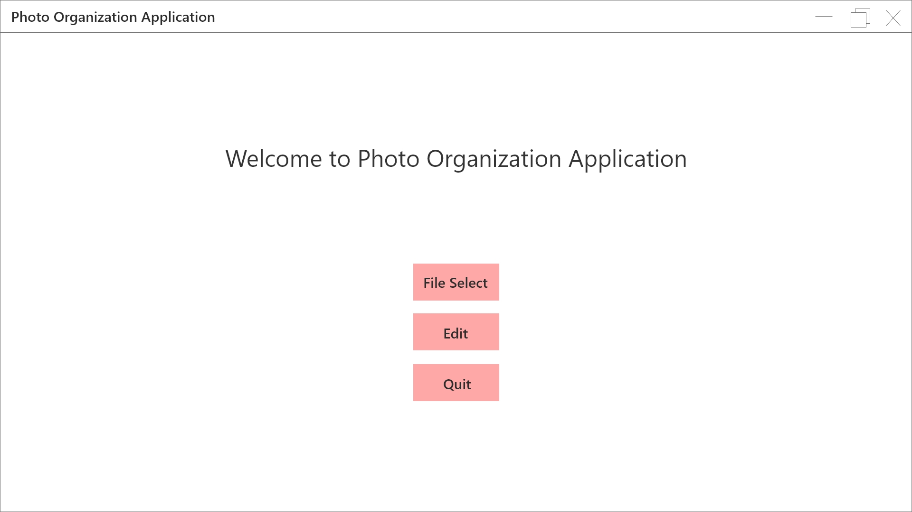
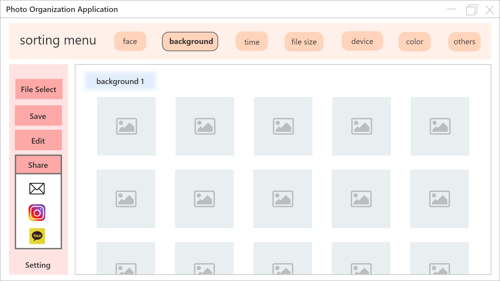
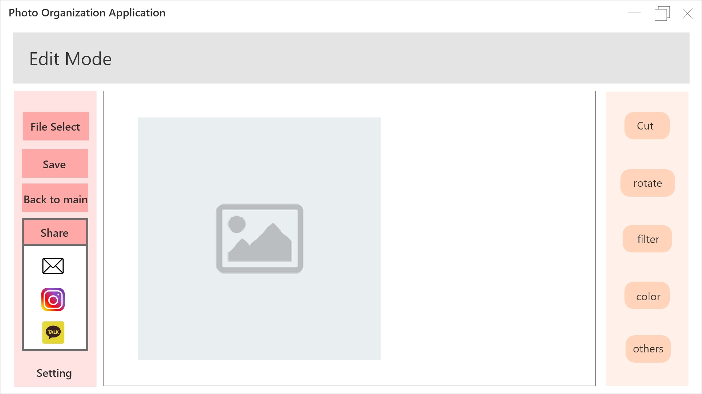

HCI Design
A. Refine your project proposal
Update and refine the user analysis/research
이 어플리케이션의 타겟 유저는 20대 초반의 사람들입니다. 사진찍기를 좋아하고 여행을 자주 다니며, 여행지에서 찍은 사진을 SNS를 통해 공유를 하는 문화를 가진 사람들에게 유용한 어플리케이션을 만들고자 합니다.
보통 핸드폰을 이용하여 사진을 많이 찍지만, 핸드폰 자체에서 이미 사진 정렬을 해주는 기능이 발달 되어있으므로 수요가 적을 것으로 예상합니다. 반면, 고가의 카메라를 이용하여 사진을 찍는 사람들도 꽤 많으며 그런 사진들은 핸드폰으로 옮기기 보다는 컴퓨터로 옮기기 때문에 이런 사람들을 타겟으로 하여 하드웨어 플랫폼은 노트북입니다.
Update and refine the functional and UI requirements
인터뷰에서 요구된 기능들 중에서는 배너의 위치를 자유자재로 바꿀 수 있게 하기, 오른손잡이 왼손잡이에 따라 설정을 바꿀 수 있게 하기가 있었는데, 의도는 좋으나 자유도가 너무 높은 것도 좋지 않음을 배웠고 기술적으로 실행시키기도 복잡하기 때문에 이 부분은 구현하지 않되, 다양한 사용자들이 직관적으로 이해하기 쉬운 인터페이스 디자인을 통해 보완하고자 합니다. 최대한 심플한 인터페이스 디자인이 될 것이며, 전체적으로 파스텔 톤으로 디자인을 할 것입니다.
요구되는 기능에는, 간단한 사진 편집(사진 회전, 자르기, 간단한 필터들, 색)이 있으며 사진 정렬의 기준에는 파일 사이즈, 시간, 찍은 기계, 사람, 배경이 있을 것입니다. 여기에서 사람, 배경의 경우 인공지능의 기술을 이용하게 될 것입니다. 마지막으로 SNS공유기능을 추가할 것입니다.
Update and refine the scenarios
시나리오의 사진은 저번과 같고 내용을 약간 더 보완했습니다.
1) 여행에 다녀온 직후 친구들에게 찍은 사진을 보내주어야하는 상황에서 노트북에 카메라를 연결하고 어플리케이션을 실행시키면 시작화면에 파일 가져오기 메뉴를 클릭한다. 파일들을 불러온 화면을 볼 수 있고, 사용자는 화면 위쪽의 사람 메뉴를 클릭하여 사람별로 사진을 분류한다. 그 후 왼쪽 저장 메뉴를 클릭하여 분류된 기준으로 저장을 하고, 공유 메뉴를 클릭하여 메일로 사진을 보낸다.
2) SNS에 여행사진을 올리고 싶어서 어플리케이션을 통해 고르기로 했다. 어플리케이션을 실행시키자 파일 가져오기 메뉴를 볼 수 있다. 클릭하여 여행사진을 저장해둔 폴더를 연다. 화면 위쪽의 배경, 색 메뉴를 선택하여 원하던 색을 가진 배경을 고른다. 고른 사진을 편집하기 위해 편집하기를 누른다. 편집 기능으로 SNS규격에 맞게 사진을 자른 후 어울리는 필터를 적용시키고 공유기능을 통해 바로 SNS에 사진을 올린다.
Update and refine the task model
앞에서 서술한 시나리오에 따른 rough interaction model을 작성해보았습니다.
1) 노트북 켜기 – 어플리케이션 실행(더블 클릭) – 첫 화면에서 파일 가져오기(클릭) – 파일 선택(클릭) – 정렬 기준에서 사람 메뉴 클릭(마우스 포인터 이동 및 클릭) – 결과 확인 및 사람 별로 노트북에 파일 저장하기(클릭) – 공유 메뉴에서 메일로 각각 파일을 전송 – 종료
2) 노트북 켜기 – 어플리케이션 실행(더블 클릭) – 첫 화면에서 파일 가져오기(클릭) – 파일 선택(클릭) – 정렬 기준에서 배경 과 색 메뉴 선택(마우스 포인터 이동 및 클릭) – 사진 고르기 – 편집 메뉴로 가기 – 자르기 – 필터 선택 및 적용 – 저장 – 공유 메뉴를 통해 SNS에 게시물 쓰기 – 종료
B. Design the interface for your proposal

시작 화면입니다. 총 세가지의 메뉴로 구성되어 있습니다. ‘file select’ 선택시에는 바로 사진 정렬을 하는 화면으로 전환이 되며, 사진 정렬 화면에는 폴더에 들어있는 사진들이 배열 되어있을 것입니다. Edit 메뉴를 선택하게 되면 편집 창으로 간 후에 사진 파일 하나를 선택하여 편집을 할 수 있습니다.

사진 정렬 시의 화면입니다. 위의 메뉴바에는 정렬 기준을 클릭을 통해 선택할 수 있게 했습니다. 최대한 단순하게 만들고자 노력한 결과입니다. 지금 보여진 화면에는 정렬 기준으로 background가 선택 되어있고 (선택 시에 자세한 설정 가능) 정렬한 결과를 공유하고자 share 메뉴를 누른 상태를 나타낸 것입니다. Sorting menu를 선택하면 세부 설정을 할 수 있도록 아래로 메뉴들이 나열될 것입니다. (왼쪽에서 share를 클릭했을 때 밑에 어떤 것으로 공유할 것인지 선택지가 나와있는 것처럼) sorting menu 중 face 와 background는 ai를 이용한 기능입니다. 가운데의 칸에는 정렬된 결과가 나오게 됩니다. Background1이라고 되어있는 것처럼 카테고리 별로 정리가 되어 나오는 모습을 확인할 수 있을 것입니다. 같은 배경을 가지고 있는 경우에는 같은 카테고리 안에서 시간 순서별로 정리가 되어서 결과물이 나오게 됩니다. 물론 이것 또한 sorting menu의 time에서 설정할 수 있습니다. 왼쪽에는 그 외의 기능 들을 수행하기 위한 메뉴들이 있습니다. File select를 누르면 현재의 상태를 따로 저장할 것인지 물어보고, 파일을 선택하게 되면 현재 불러 들어와져 있는 사진들에 더할 것인지, 아니면 기존의 파일들은 없애고 새로 photo organization을 시작할 것인지를 물어볼 것입니다. 저장은, 지금 분류된 상태의 것들을 서브파일들로 저장, 혹은 edit한 사진을 저장하는 역할을 하게 됩니다. Edit는 파일 한 개를 선택했을 때 활성화 됩니다. 그 사진을 edit mode로 가서 편집을 하게 되는 것입니다. Share는 공유를 바로 할 수 있게 한 기능입니다.

마지막으로, 사진 편집 창입니다. 위에는 파일 정렬과 달리 편집 모드인 것을 알려주기 위해 파일정렬 메뉴가 있었던 만큼의 공간을 edit mode 제목에 사용하였습니다. 사진 정렬 화면과 마찬가지로 왼쪽에는 사진편집 외의 기능들을 수행하기 위한 메뉴를 배치하였고 작동 순서 또한 같습니다. 차이점으로 back to main이 있는데, 이는 파일 정렬 화면으로 돌아가게 되며 선택된 사진이 조금이라고 편집이 되었다면 저장을 할 것인지 물어봅니다. 오른쪽에는 사진을 편집하기 위한 방법들이 나열되어 있습니다. 사진 편집 방법을 선택하게 되면 가운데의 공간에서 사진을 편집하거나 필터 같은 것들은 사진 오른쪽 공간에서 선택한 뒤 적용할 수 있습니다.